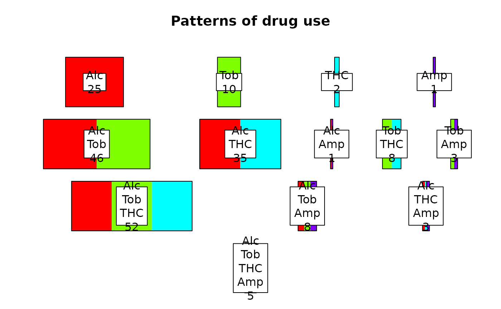
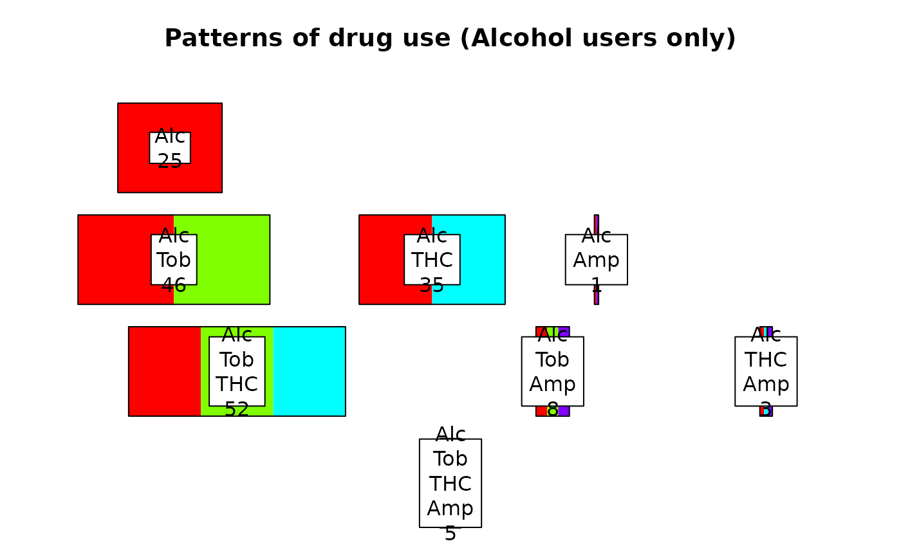
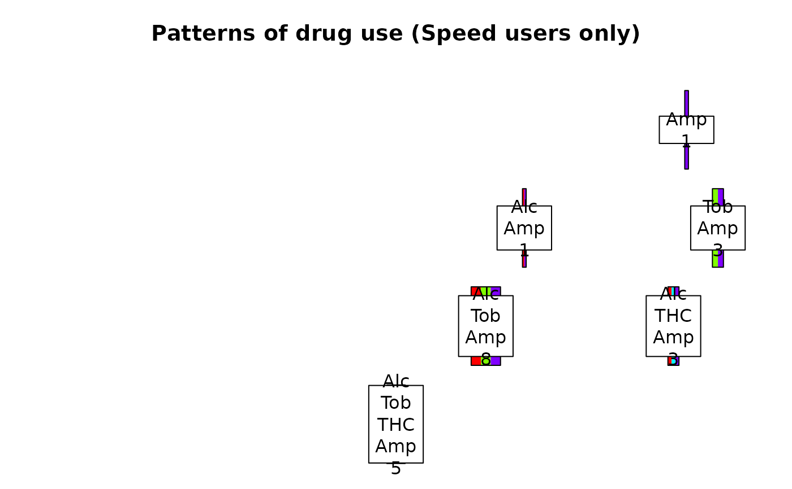
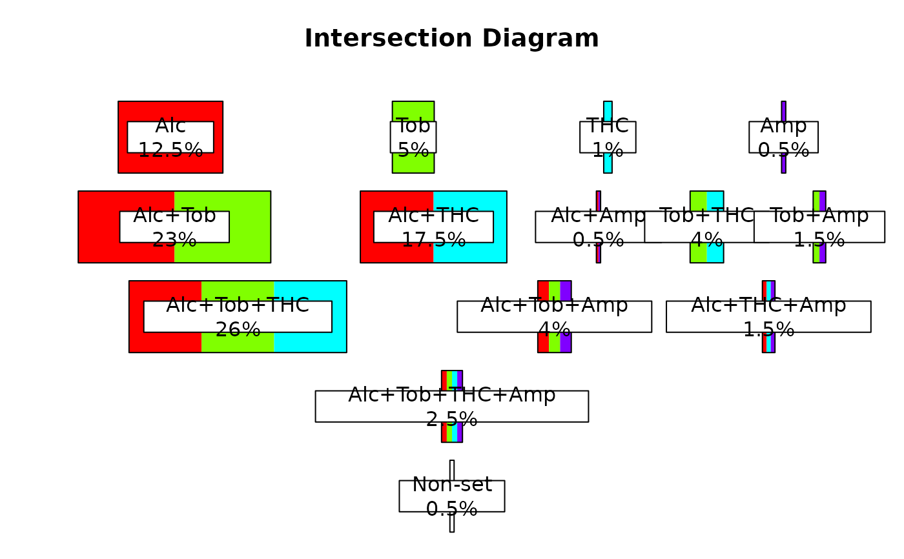
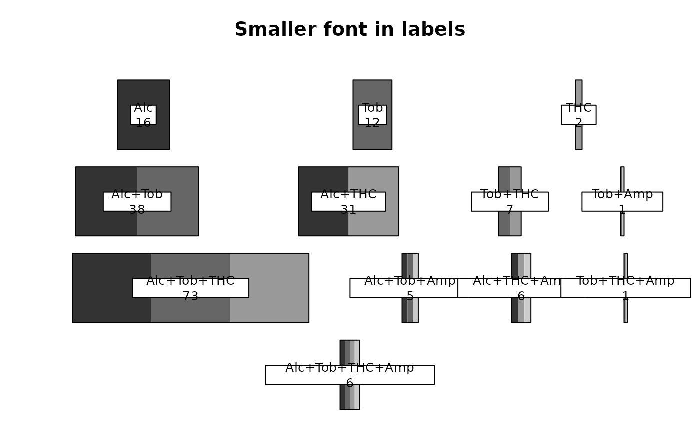
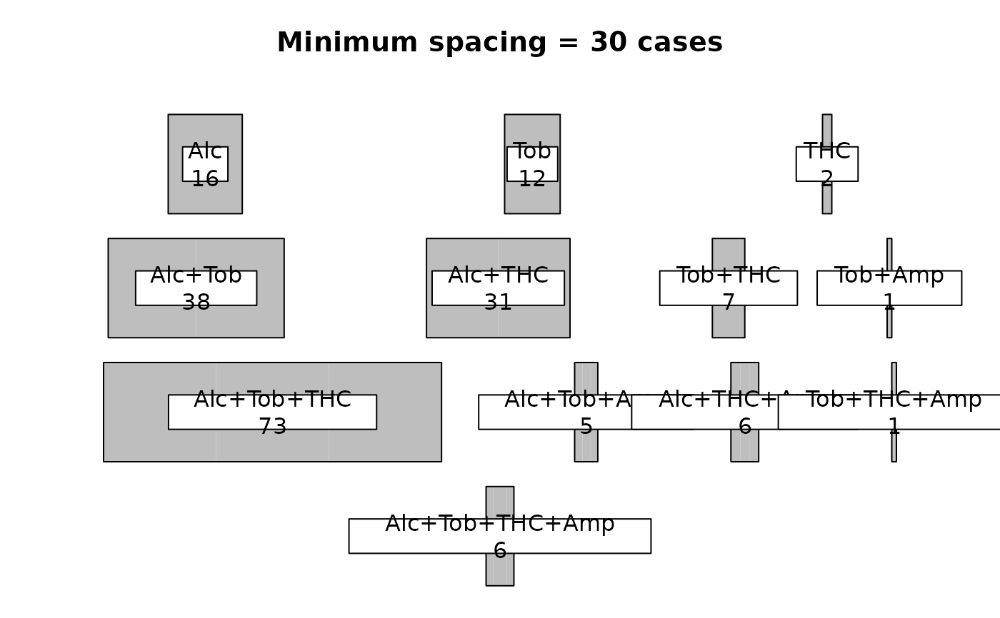
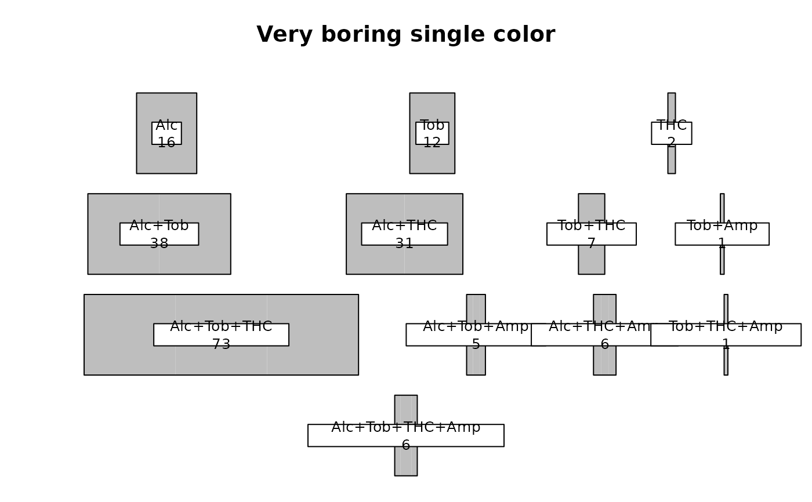
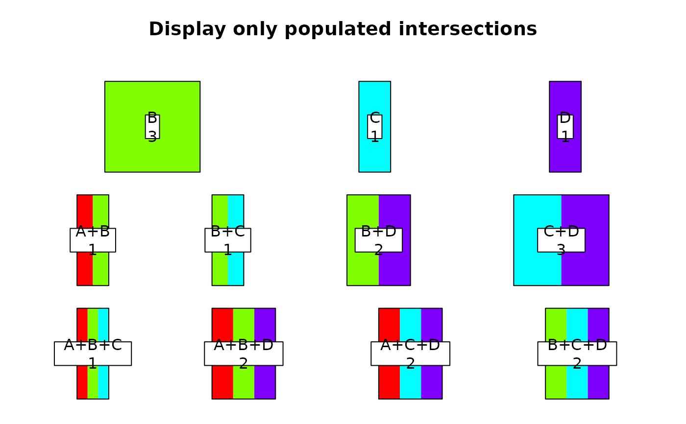

Display set intersections
intersectDiagram.RdDisplay set intersections as rows of rectangles.
Usage
intersectDiagram(x,pct=FALSE,show.nulls=FALSE,xnames=NULL,sep="+",
mar=c(0,0,3,0),main="Intersection Diagram",cex=1,col=NULL,
minspacing=NA,all.intersections=FALSE,include=NULL,null.label="Non-set")Arguments
- x
A list containing as many numeric vectors as there are sets. The first vector contains the counts or percentages of the elements that are only in one set, the next vector contains the counts or percentages of elements that are in two sets and so on. A matrix of set membership indicators or a two column matrix of object identifiers and attribute identifiers can be passed - see Details.
- pct
Whether to display counts (FALSE) or percentages (TRUE) of the number of entities.
- show.nulls
Whether to display the number of original objects that are not members of any set. Any value that is not NA will become the label for this category.
- xnames
Optional user supplied names for the set categories (see Details).
- sep
The separator to use between category names (see Details).
- mar
The margins for the diagram. The margins that were in effect when the function is called are restored.
- main
The title for the diagram.
- col
Colors for the sets (see Details).
- cex
Character expansion for the intersection labels.
- minspacing
The minimum spacing between the rectangles (see Details).
- all.intersections
Whether to display all intersections, even if empty (Dangerous - see Detail).
- include
Which set identifiers to include in the diagram (see Details).
- null.label
The label for the non-set entities if displayed.
Details
intersectDiagram displays rows of optionally colored rectangles that represent the intersections of set memberships (attributes) of a set of objects. The topmost row represents the intersections of the fewest sets, and succeeding rows represent the intersections of more sets. If there were objects in the original data set that were not members of any set, any percentages calculated will reflect this. By setting show.nulls to TRUE, the counts or percentages of such objects will be displayed below the intersections over an empty rectangle scaled to the count or percentage.
Important - If the all.intersections argument is TRUE, all intersections will be displayed, whether empty or not (see the example). This is mostly for demonstration purposes, and if the number of sets is large, is likely to produce a very messy diagram. Similarly, sets with large numbers of intersections that are populated will require very large displays to be readable, even if there are small numbers in the intersections. If you would like to see this in action, pass the data frame setdf in the categoryReshape example to intersectDiagram with all.intersections TRUE.
intersectDiagram does not attempt to display the set intersections as a pattern of overlapping geometric figures, but rather the relative numbers of objects sharing each intersection. More than three intersecting sets generally produce a complex and difficult to interpret Venn diagram, and this provides an alternative way to display the size of intersections between larger numbers of sets.
intersectDiagram now allows the user to display only part of the set intersections, which is useful for analyzing very complex intersections. This is controlled by the include argument. This defaults to all sets or attributes when include=NULL. If one or more of the labels of the sets or attributes is passed, only the intersections containing those labels will be displayed. See examples 2 and 3 below.
Each set (attribute) is assigned a color if col is not NA. rainbow is called if col is NULL, otherwise the colors passed are used. For each intersection, the colors representing the sets intersecting are included in the rectangle.
The strings displayed on each rectangle are taken from the argument xnames unless that is NULL, then the names of the intersectList object passed as x or returned from the call to makeIntersectList.
If a matrix or data frame of set membership indicators is passed as x, it will be passed to makeIntersectList for conversion. Each column must represent a set, and the values in the columns must be 0 or 1, or FALSE or TRUE. Similarly, if a matrix or data frame in which the first column is object identifiers and the second column is attributes, this will be passed to makeIntersectList.
The spacing between the largest rectangles is controlled by minspacing. minspacing is in units of object counts and defaults to 0.1 times the largest number of objects in an intersection. When the number of objects in different intersections at a given level varies widely, the labels of intersections with few objects may overlap if they are wide relative to the rectangle representing the number of objects. This can be corrected by passing a minspacing argument that will increase the space between rectangles and/or decreasing the character size of the labels. If the labels for each set are relatively long, setting namesep="\n" may help. Note that if a different separator is passed, that separator must be explicitly passed in any subsequent calls using the same intersectList object - see examples 1 to 3 below.
Examples
# create a matrix where each row represents an element and
# a 1 (or TRUE) in each column indicates that the element is a member
# of that set.
druguse<-matrix(c(sample(c(0,1),200,TRUE,prob=c(0.15,0.85)),
sample(c(0,1),200,TRUE,prob=c(0.35,0.65)),
sample(c(0,1),200,TRUE,prob=c(0.5,0.5)),
sample(c(0,1),200,TRUE,prob=c(0.9,0.1))),ncol=4)
colnames(druguse)<-c("Alc","Tob","THC","Amp")
druglist<-makeIntersectList(druguse,sep="\n")
# first display it as counts
intersectDiagram(druglist,main="Patterns of drug use",sep="\n")

# then display only the intersections containing "Alc"
intersectDiagram(druglist,main="Patterns of drug use (Alcohol users only)",
sep="\n",include="alc")

# now display only the intersections containing "Amp"
intersectDiagram(druglist,main="Patterns of drug use (Speed users only)",
sep="\n",include="amp")

# then as percent with non.members, passing the initial matrix
intersectDiagram(druguse,pct=TRUE,show.nulls=TRUE)

# alter the data to have more multiple intersections
druguse[which(as.logical(druguse[,1]))[1:40],2]<-1
druguse[which(as.logical(druguse[,1]))[31:70],3]<-1
druguse[,4]<-sample(c(0,1),200,TRUE,prob=c(0.9,0.1))
intersectDiagram(druguse,main="Smaller font in labels",
col=c("gray20","gray40","gray60","gray80"),cex=0.8)

# transform the spacing - usually makes it too close, first try minspacing
intersectDiagram(druguse,col="gray",main="Minimum spacing = 30 cases",
minspacing=30)

# then try cex - may need both for large differences
intersectDiagram(druguse,main="Very boring single color",col="gray",cex=0.8)

# create a matrix with empty intersections
druguse<-matrix(c(sample(c(0,1),20,TRUE),
sample(c(0,1),20,TRUE),
sample(c(0,1),20,TRUE),
sample(c(0,1),20,TRUE)),ncol=4)
# show only the populated intersections
intersectDiagram(druguse,main="Display only populated intersections")

# show all intersections
intersectDiagram(druguse,main="Display empty intersections",all.intersections=TRUE)